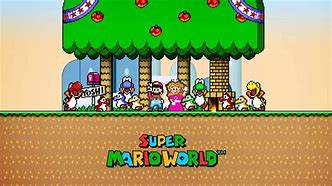
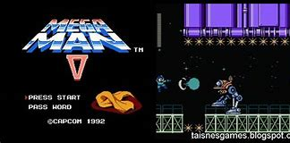

Super Mario
Koopa veio e colocou um feitiço no Reino do Cogumelo e a Princesa Peach é a único que pode desfazer o feitiço. Portanto, Bowlser a sequestrou e agora, Mario junto de seu irmão, Luigi deve resgatá-la do castelo de Bowlser para trazer paz ao reino.

Sonic the Hedgehog
O ouriço nasceu em Green Hill. Ele sempre se destacou entre os os outros animais da ilha devido a sua velocidade. Além disso, o local era sustentado pelo poder das Chaos Emerald, pedras especiais que possuíam uma grande fonte de poder.

Mega Man
O primeiro jogo do Mega Man saiu no Nintendinho em 1987. Seu objetivo é derrotar cinco perigosos robôs do maléfico Dr. Wily e obter os poderes deles. Na última fase, lute contra todos os inimigos e contra o próprio Dr. Wily para salvar o mundo.